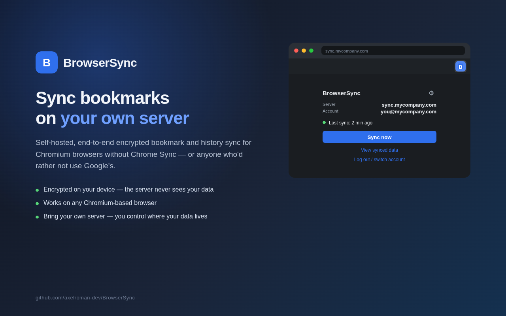

Sincroniza tus marcadores e historial en cualquier navegador Chromium
Una extensión de navegador que cifra tus datos en tu dispositivo y un servidor autoalojado que solo almacena blobs cifrados. Sin servicios de terceros, sin telemetría.
¿Qué es BrowserSync?
Es un sistema de sincronización de marcadores e historial pensado para navegadores basados en Chromium (Chrome, Brave, Edge, Helium, ungoogled-chromium y similares). Ideal si usas un fork sin Chrome Sync, o si simplemente prefieres mantener tus datos de navegación en tu propio servidor en lugar de en la nube de Google, Microsoft o Brave.
Los datos se cifran en tu navegador con una contraseña antes de salir del dispositivo. El servidor solo ve ciphertext — nunca puede leer tus marcadores ni tu historial.
Cómo funciona
Consta de dos piezas:
- Extensión (Manifest V3). Se instala como una extensión empaquetada ("Load unpacked") en cualquier navegador Chromium. Cifra los datos localmente, los sube al servidor y los descarga en tus otros dispositivos.
- Servidor (Node.js + Express + PostgreSQL). Es este servidor que estás visitando. Almacena cuentas, dispositivos vinculados y los blobs cifrados, y los retransmite entre ellos. Tú lo autoalojas — corre en Docker, es multiusuario y tú decides quién se registra.

Privacidad
El servidor nunca recibe tus datos en texto plano: no tiene la clave para descifrarlos. Toda la criptografía ocurre del lado del cliente, con una contraseña y una frase de recuperación generadas al crear la cuenta.
Lee la explicación completa de privacidad para ver exactamente qué se almacena y qué no.
Código abierto
BrowserSync es software libre. El código de la extensión y del servidor vive en el mismo repositorio: